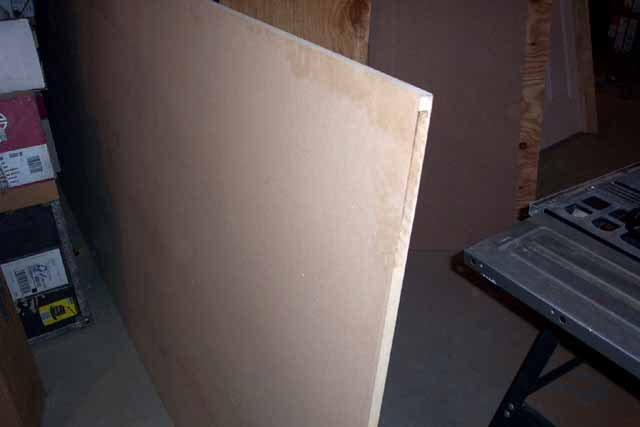

Lets talk about what materials
to use. Previously on the first kiosk project.... the
Colecovision kiosk I went the route of using particle board and then covering
the outside wall with black laminate and spraying the inside wall with
black spray paint. The effect was very good, but the expensive
was a bit high and the time involved was lengthy. So I thought
about alternatives when right in front of me in my basement was the very
answer! I just recently had a new house built and
the builder had left some materials for the custom kitchen.
One the materials was a 4' x 12' sheet of MDF (Medium Density Fiberboard)
this stuff is gorgeous to say the least (in a wood working sense that is
:-)

So, I ran down to the local Home Depot to check costs and to see if this would be something economical that everyone might be able to use before recommending it. So while a sheet of 4x8 particle board runs $14, Medium Density Fiberboard is $15 so this is definitely the route to go. Why am I so psych'ed up over this stuff??? Go check it out, its as smooth as glass, strong and easy to work with. So the plan here is, I used the MDF and instead of laminate or contact paper, we'll use Black semi-gloss spray paint for the coating.
So lets talk dimensions....
going back to the first project, the Coleco Kiosk I mentioned that in order
to make life easier, lets use divisions of 4x8 sheets of material.
So get your local Home Depot of Lowes to cut your MDF down to 4 X 6, keep
that 2x4 sheet for later as we'll have use for it.... now have them cut
the 4x6 down into 2 2x6 sheets. Next,
looking at the photo I took some guesses. 10 Degree angles
looked best suited for the cut out and top angle. So
cut the top down at the 10 degree angle. Come down 7" and then
cut in at another 10 degree angle inward 6" then down 24" and back out
at 10 degrees. I used a small can to mark out the rounded corners
and used a router to make my cut-outs. Did some wood
putty touchups where the router got a little out of control, let sit for
2 hours and then sanded and filed everything down....